Interactive preset demo
One history.
Three villages.
The contribution history stays fixed while the village density changes. Choose a preset to see how much nature or civilization you want in your profile.

Balanced
A mix of nature, farms, villages, and cities.